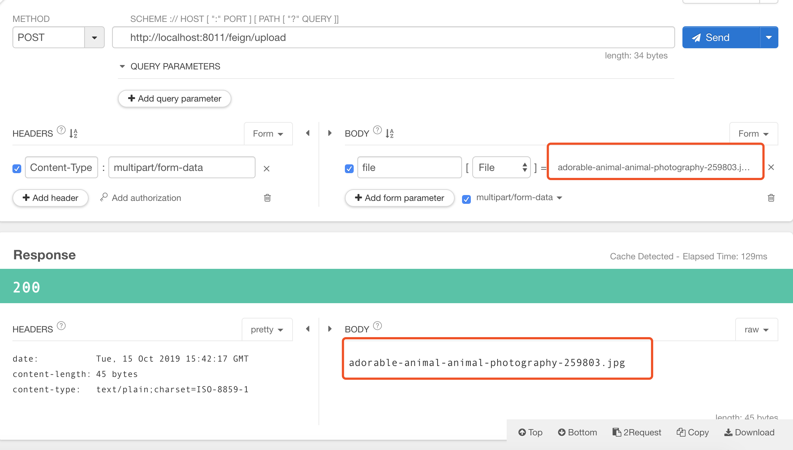

话不多说，上代码。。。。
<parent>
<groupId>org.springframework.boot</groupId>
<artifactId>spring-boot-starter-parent</artifactId>
<version>2.0.3.RELEASE</version>
<relativePath/>
</parent>
<properties>
<project.build.sourceEncoding>UTF-8</project.build.sourceEncoding>
<project.reporting.outputEncoding>UTF-8</project.reporting.outputEncoding>
<java.version>1.8</java.version>
<spring-cloud.version>Finchley.RELEASE</spring-cloud.version>
</properties>
<dependencyManagement>
<dependencies>
<dependency>
<groupId>org.springframework.cloud</groupId>
<artifactId>spring-cloud-dependencies</artifactId>
<version>${spring-cloud.version}</version>
<type>pom</type>
<scope>import</scope>
</dependency>
</dependencies>
</dependencyManagement>
a、eureka server工程pom依赖：
<!-- 加上上面的公共依赖 -->
<dependencies>
<dependency>
<groupId>org.springframework.cloud</groupId>
<artifactId>spring-cloud-starter-netflix-eureka-server</artifactId>
</dependency>
<dependency>
<groupId>org.springframework.boot</groupId>
<artifactId>spring-boot-starter-actuator</artifactId>
</dependency>
<!-- springboot web -->
<dependency>
<groupId>org.springframework.boot</groupId>
<artifactId>spring-boot-starter-web</artifactId>
</dependency>
</dependencies>
<build>
<plugins>
<plugin>
<groupId>org.springframework.boot</groupId>
<artifactId>spring-boot-maven-plugin</artifactId>
</plugin>
</plugins>
</build>
b、eureka server工程启动类：
import org.springframework.boot.SpringApplication;
import org.springframework.boot.autoconfigure.SpringBootApplication;
import org.springframework.cloud.netflix.eureka.server.EnableEurekaServer;
@SpringBootApplication
@EnableEurekaServer
public class EurekaServerApplication {
public static void main(String[] args) {
SpringApplication.run(EurekaServerApplication.class, args);
}
}
c、eureka server工程配置文件：eureka-server\src\main\resources\bootstrap.yml
server:
port: 8761
eureka:
instance:
hostname: localhost
client:
registerWithEureka: false
fetchRegistry: false
serviceUrl:
defaultZone: http://${eureka.instance.hostname}:${server.port}/eureka/
a、demo-server工程pom依赖：
<!-- 加上上面的公共依赖 -->
<dependencies>
<dependency>
<groupId>org.springframework.boot</groupId>
<artifactId>spring-boot-starter-web</artifactId>
</dependency>
<dependency>
<groupId>org.springframework.cloud</groupId>
<artifactId>spring-cloud-starter-netflix-eureka-client</artifactId>
</dependency>
</dependencies>
<build>
<plugins>
<plugin>
<groupId>org.springframework.boot</groupId>
<artifactId>spring-boot-maven-plugin</artifactId>
</plugin>
</plugins>
</build>
b、demo-server工程启动类：
import org.springframework.boot.SpringApplication;
import org.springframework.boot.autoconfigure.SpringBootApplication;
import org.springframework.cloud.client.discovery.EnableDiscoveryClient;
@SpringBootApplication
@EnableDiscoveryClient
public class FileServerApplication {
public static void main(String[] args) {
SpringApplication.run(FileServerApplication.class, args);
}
}
c、编写模拟代码：
import org.springframework.http.MediaType;
import org.springframework.web.bind.annotation.PostMapping;
import org.springframework.web.bind.annotation.RestController;
import org.springframework.web.multipart.MultipartFile;
@RestController
public class FeignUploadController {
@PostMapping(value = "/uploadFile/server", consumes = MediaType.MULTIPART_FORM_DATA_VALUE)
public String fileUploadServer(MultipartFile file ) throws Exception{
String originalFilename = file.getOriginalFilename();
System.out.println("originalFilename----->"+originalFilename);
//上传。。。。
return originalFilename;
}
}
d、demo-server工程配置文件：demo-server\src\main\resources\application.yml
server:
port: 8012
spring:
application:
name: demo-server
eureka:
server:
enableSelfPreservation: false
client:
serviceUrl:
defaultZone: http://${eureka.host:127.0.0.1}:${eureka.port:8761}/eureka/
instance:
prefer-ip-address: true
a、demo-client工程pom依赖：
<!--加上上面的公共依赖-->
<dependencies>
<dependency>
<groupId>org.springframework.boot</groupId>
<artifactId>spring-boot-starter-web</artifactId>
</dependency>
<dependency>
<groupId>org.springframework.cloud</groupId>
<artifactId>spring-cloud-starter-netflix-eureka-client</artifactId>
</dependency>
<!-- Spring Cloud OpenFeign的Starter的依赖 -->
<dependency>
<groupId>org.springframework.cloud</groupId>
<artifactId>spring-cloud-starter-openfeign</artifactId>
</dependency>
<!-- Feign文件上传依赖-->
<dependency>
<groupId>io.github.openfeign.form</groupId>
<artifactId>feign-form</artifactId>
<version>3.0.3</version>
</dependency>
<dependency>
<groupId>io.github.openfeign.form</groupId>
<artifactId>feign-form-spring</artifactId>
<version>3.0.3</version>
</dependency>
</dependencies>
<build>
<plugins>
<plugin>
<groupId>org.springframework.boot</groupId>
<artifactId>spring-boot-maven-plugin</artifactId>
</plugin>
</plugins>
</build>
b、demo-client工程启动类：
import org.springframework.boot.SpringApplication;
import org.springframework.boot.autoconfigure.SpringBootApplication;
import org.springframework.cloud.client.discovery.EnableDiscoveryClient;
import org.springframework.cloud.openfeign.EnableFeignClients;
@SpringBootApplication
@EnableDiscoveryClient
@EnableFeignClients
public class FeignFileUploadApplication {
public static void main(String[] args) {
SpringApplication.run(FeignFileUploadApplication.class, args);
}
}
c、上传相关代码：
import feign.form.spring.SpringFormEncoder;
import org.springframework.context.annotation.Bean;
import org.springframework.context.annotation.Configuration;
import org.springframework.context.annotation.Primary;
import org.springframework.context.annotation.Scope;
import feign.codec.Encoder;
/**
* Feign文件上传Configuration
*/
@Configuration
public class FeignMultipartSupportConfig {
@Bean
@Primary
@Scope("prototype")
public Encoder multipartFormEncoder() {
return new SpringFormEncoder();
}
}import cn.springcloud.book.feign.config.FeignMultipartSupportConfig;
import org.springframework.cloud.openfeign.FeignClient;
import org.springframework.http.MediaType;
import org.springframework.web.bind.annotation.RequestMapping;
import org.springframework.web.bind.annotation.RequestMethod;
import org.springframework.web.bind.annotation.RequestPart;
import org.springframework.web.multipart.MultipartFile;
@FeignClient(value = "demo-server", configuration = FeignMultipartSupportConfig.class)
public interface FileUploadFeignService {
/***
* 1.produces,consumes必填
* 2.注意区分@RequestPart和RequestParam，不要将
* @RequestPart(value = "file") 写成@RequestParam(value = "file")
* @param file
* @return
*/
@RequestMapping(method = RequestMethod.POST, value = "/uploadFile/server",
produces = {MediaType.APPLICATION_JSON_UTF8_VALUE},
consumes = MediaType.MULTIPART_FORM_DATA_VALUE)
public String fileUpload(@RequestPart(value = "file") MultipartFile file);
}import cn.springcloud.book.feign.service.FileUploadFeignService;
import org.springframework.beans.factory.annotation.Autowired;
import org.springframework.http.MediaType;
import org.springframework.web.bind.annotation.PostMapping;
import org.springframework.web.bind.annotation.RequestMapping;
import org.springframework.web.bind.annotation.RestController;
import org.springframework.web.multipart.MultipartFile;
import java.nio.charset.StandardCharsets;
@RestController
@RequestMapping("/feign")
public class FeignUploadController {
@Autowired
private FileUploadFeignService fileUploadFeignService;
@PostMapping(value = "/upload", consumes = MediaType.MULTIPART_FORM_DATA_VALUE)
public String imageUpload(MultipartFile file) throws Exception {
String s = fileUploadFeignService.fileUpload(file);
System.out.println("s----------->" + s);
return s;
}
}
d、demo-client工程配置文件：demo-client\src\main\resources\application.yml
server:
port: 8011
spring:
application:
name: feign-upload-client
eureka:
client:
service-url:
defaultZone: http://localhost:8761/eureka
3、使用测试工具，测试接口，这里使用的是RestletClient：

可以看到已经正常的返回了图片的名字！！！